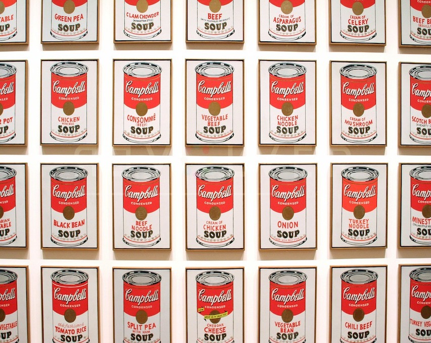
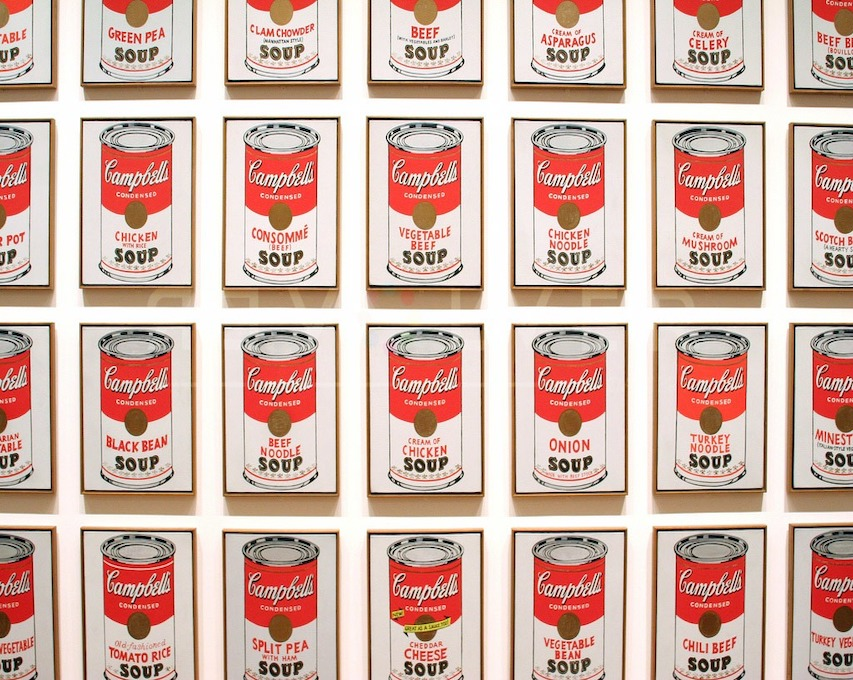

Eat Like Warhol
In the late 1950s, Warhol began devoting more attention to painting, and in 1961, he debuted the concept of "pop art" — paintings that focused on mass-produced commercial goods. In 1962, he exhibited the now-iconic paintings of Campbell's soup cans. These small canvas works of everyday consumer products created a major stir in the art world, bringing both Warhol and pop art into the national spotlight for the first time.
British artist Richard Hamilton described pop art as "popular, transient, expendable, low cost, mass-produced, young, witty, sexy, gimmicky, glamorous, big business." As Warhol himself put it, "Once you 'got' pop, you could never see a sign the same way again. And once you thought pop, you could never see America the same way again.
"Warhol's other famous pop paintings depicted Coca-cola bottles, vacuum cleaners and hamburgers
 
